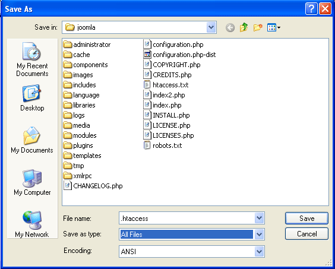
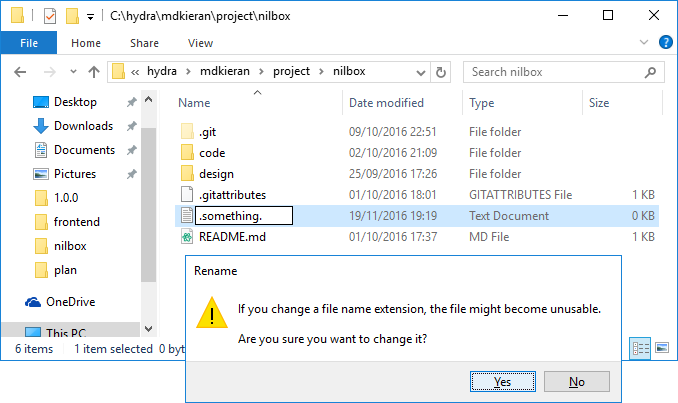

How do I manually create a file with a . (dot) prefix in Windows? For example, .htaccess
I want to create a .htaccess file manually and discovered it seems
impossible through the Windows UI. I get a "you must type a filename."
message. There has to be a way to create files with . as a prefix in
Windows.
Can this be done manually?

Answer
If you start Notepad and then File -> Save As -> Write .htaccess and choose "All Files" as the type - then it will create the .htaccess file for you.

Suggest
Windows 7, 8 & 10
This is dead easy since Windows 7. In File Explorer, right click anywhere
and create a new file. Type the new filename as .something. (notice the
appended period) and press enter twice, job done.

So instead of being prompted with
You must type a file name.
You will instead be prompted with
If you change a file name extension, the file might become unusable.
Note: If you're having issues then please ensure you have "file name extensions" visible, you can activate this under the "View" menu in File Explorer. Also, this method works for folders too.